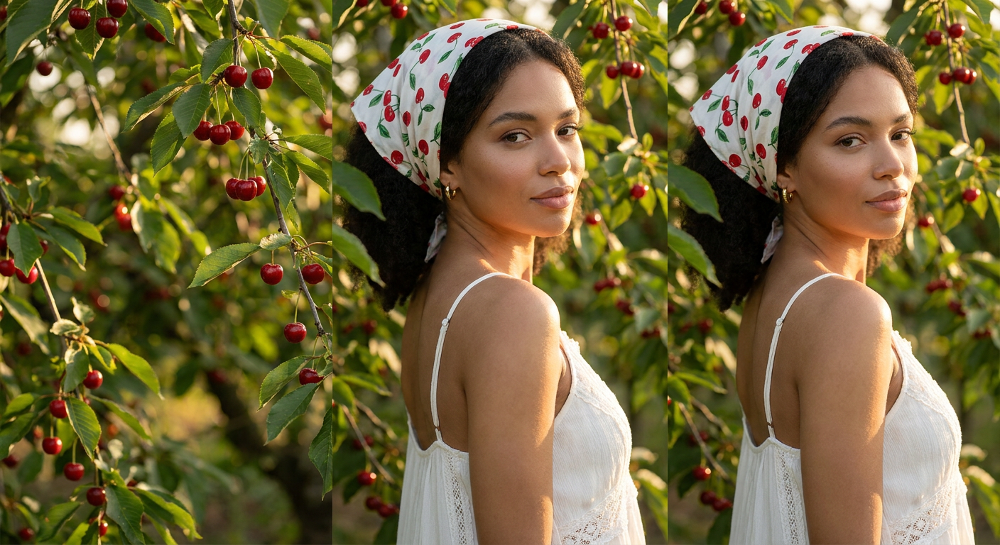
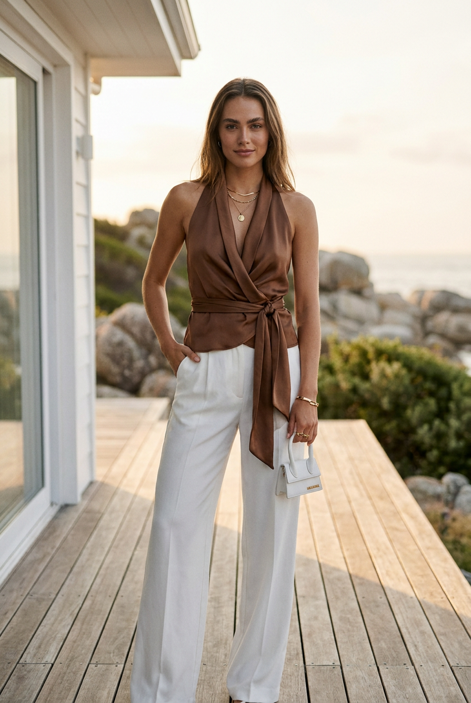
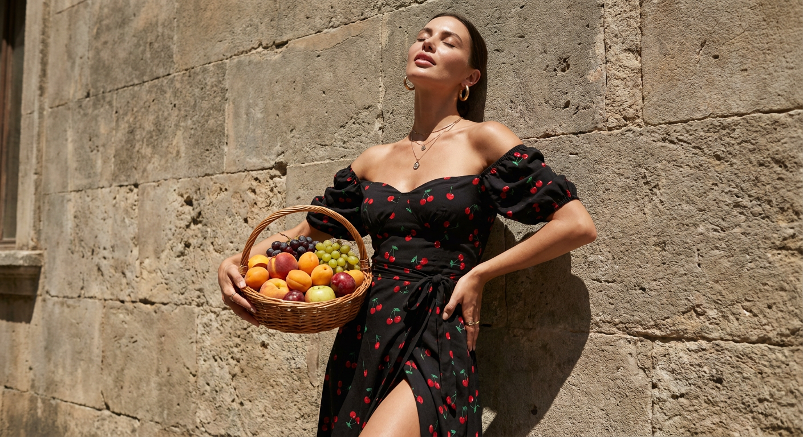
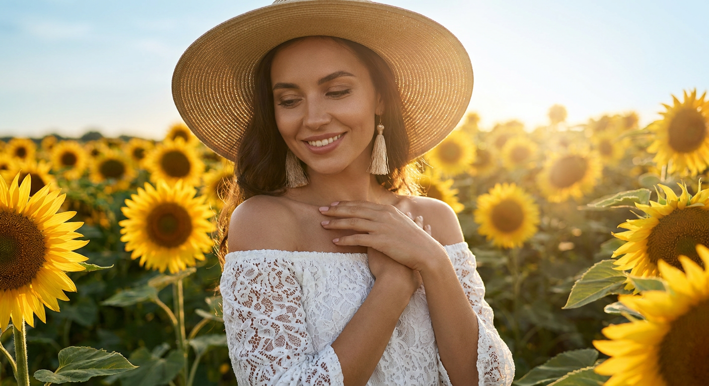
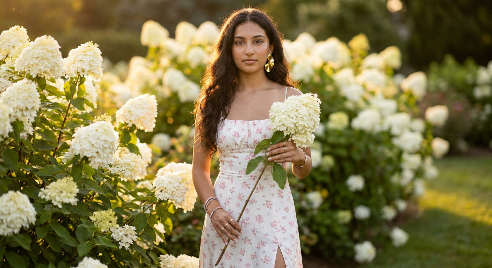
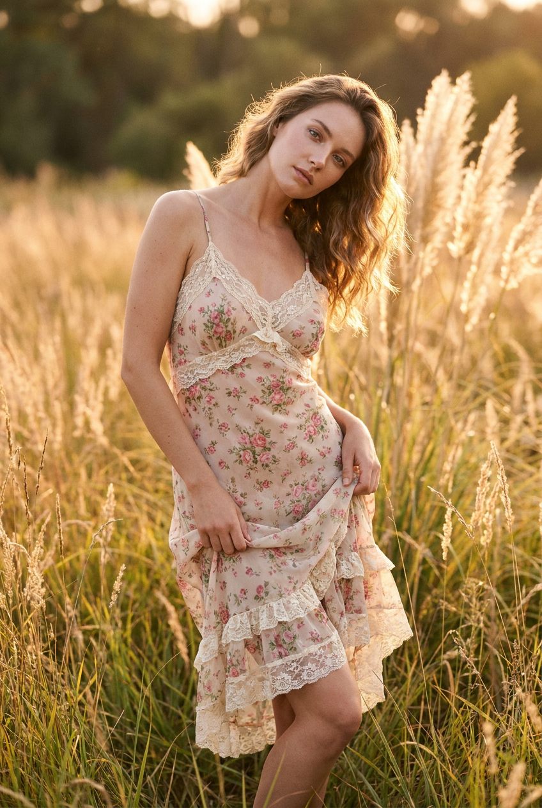
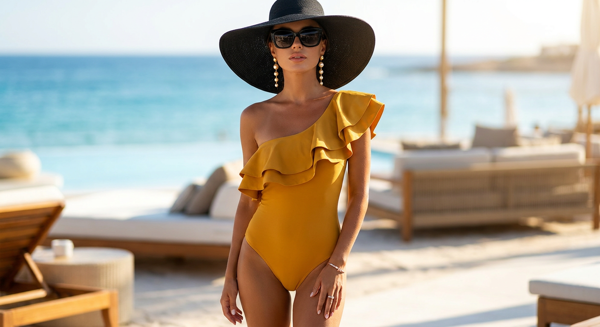
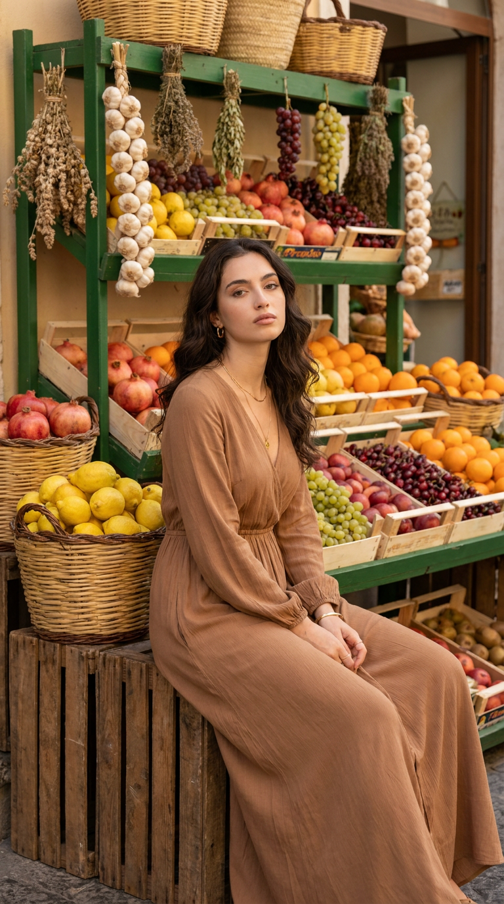
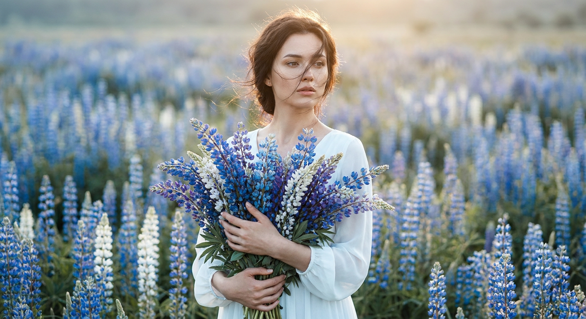
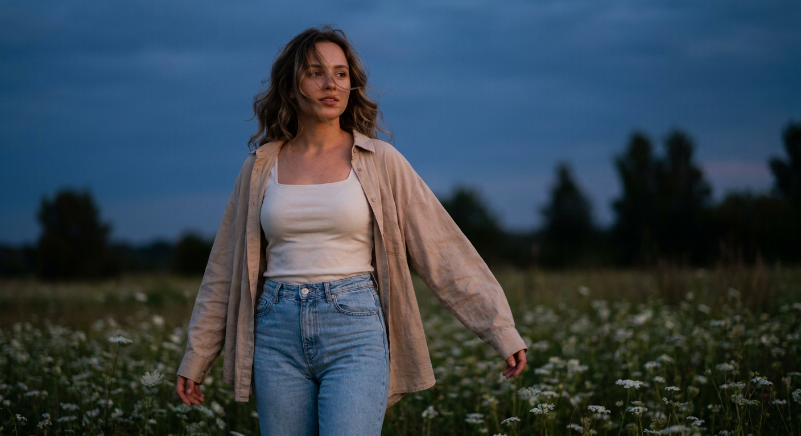

Летние ИИ-фото: 10 промптов для нейросети

Летние снимки часто требуют подходящей локации, света, одежды и удачной позы — а на настоящую фотосессию не всегда есть время или бюджет. Генерация помогает собрать нужный кадр из нескольких точных деталей и попробовать разные образы без поездок и сложной подготовки.
В подборке — десять сценариев для нейросети: вишнёвый сад, морская терраса, каменная стена, подсолнухи, гортензии, луговые травы, пляж, фруктовый рынок, поле люпинов и вечерние цветы. Промпты рассчитаны на работу с референсом лица.
Как сгенерировать такое фото: пошагово
Нужен снимок анфас при ровном свете, лицо в кадре целиком, без тёмных очков и головных уборов. Разрешение от 1000 пикселей по короткой стороне. Чем чётче исходник, тем точнее модель повторит черты.
Выберите сценарий ниже и нажмите «Копировать» — текст уйдёт в буфер целиком, вместе с командой сохранения внешности. Эта команда стоит первой строкой и отвечает за то, чтобы на выходе было ваше лицо, а не случайное.
Кнопка «Сгенерировать» рядом с каждым промптом открывает модель в новой вкладке. Nano Banana Pro работает с референсом лица — в отличие от моделей, которые генерируют портрет с нуля и узнаваемость теряют.
Промпт — в поле ввода, портрет — через загрузку референса. Порядок значения не имеет, но без референса команда сохранения внешности работать не будет: модели нечего сохранять.
Для сторис и ленты берите 9:16, для превью и обложек — 4:3. Первый результат редко идеален: если поза или свет ушли не туда, поправьте соответствующую часть промпта и запустите заново. Обычно хватает двух-трёх итераций.
10 промптов для генерации
1. Вишнёвый сад и белое платье
Строго сохранить внешность по загруженному референсу: черты лица, пропорции, мимику и текстуру кожи без изменений. Фотореалистичная fashion-editorial съёмка в цветущем или плодоносящем вишнёвом саду. Используй лицо с референсного фото без изменений: сохрани форму глаз, носа, губ, подбородка, скул, овал лица, естественную мимику и узнаваемые индивидуальные черты. Женщина стоит среди ветвей с цветами или спелыми вишнями, корпус слегка развёрнут, а голову она поворачивает через плечо к камере. Поза спокойная, расслабленная и изящная; взгляд направлен в объектив или немного в сторону, выражение мягкое, уверенное, мечтательное и нежное. На ней лёгкое белое платье из воздушной ткани с тонкими бретелями, открытой спиной или плечами, аккуратной линией корсета и мягкой посадкой по фигуре. Дорогая журнальная эстетика, естественная кожа, мягкий дневной свет, размытый фон, малая глубина резкости, объектив 85 мм, диафрагма f/1.8, вертикальный кадр 2:3.
2. Морская терраса у дома

Строго сохранить внешность по загруженному референсу: черты лица, пропорции, мимику и текстуру кожи без изменений. Создай фотореалистичное luxury editorial-фото в полный рост на деревянной террасе или веранде у белого современного дома с большими окнами. За моделью виден прибрежный пейзаж: мягко размытые камни, зелень, море или океан, лёгкая дымка морского воздуха и дорогая курортная атмосфера. Используй загруженный портрет как референс и сохрани лицо, пропорции, форму глаз, бровей, носа, губ, овал и естественную мимику. Кожа реалистичная, с деликатным сиянием и видимой текстурой, без пластиковой ретуши. Макияж в стиле luxury beauty: мягкий контуринг, аккуратные брови, выразительные глаза, нейтральные губы. Женщина стоит уверенно и естественно, волосы слегка двигаются от ветра. Свет солнечный, но мягкий, цвета светлые и чистые, ощущение премиальной курортной кампании, объектив 50 мм, f/2.8, вертикальный формат 2:3.
3. Фрукты у каменной стены

Строго сохранить внешность по загруженному референсу: черты лица, пропорции, мимику и текстуру кожи без изменений. Фотореалистичный кинематографичный кадр в полный рост: молодая женщина стоит у фактурной стены из старого камня и состаренной кладки тёплых серо-песочных оттенков. Яркий полуденный свет падает сбоку, создавая жёсткие тени, выразительные блики на коже и ткани и чувственную летнюю атмосферу. Лицо должно точно соответствовать референсу: без изменения черт, пропорций и естественной текстуры кожи. Женщина слегка откинулась назад, спина и плечи касаются стены, таз немного выведен вперёд. Голова запрокинута, глаза закрыты, губы слегка приоткрыты; выражение расслабленное, самоуверенное, будто она наслаждается теплом. В одной руке плетёная корзина из ивы или ротанга, наполненная персиками, абрикосами и другими свежими фруктами. Одежда летняя, лёгкая, с естественными складками. Жёсткий солнечный рисунок, тёплая цветокоррекция, объектив 35 мм, f/4, вертикальный кадр 2:3.
4. Белое платье среди подсолнухов

Строго сохранить внешность по загруженному референсу: черты лица, пропорции, мимику и текстуру кожи без изменений. Сделай фотореалистичную fashion-фотографию женщины в высоком поле подсолнухов. Вокруг — крупные цветущие растения, зелёные стебли и тёплый летний воздух; композиция напоминает дорогую редакционную съёмку на природе. Лицо возьми с референса и не меняй форму лица, глаз, бровей, носа, губ, скул, оттенок и текстуру кожи, возраст и узнаваемость. Женщина стоит в спокойной мечтательной позе: корпус немного повёрнут, плечи опущены, руки мягко скрещены у груди, пальцы выглядят естественно. Взгляд опущен, глаза слегка прикрыты, выражение нежное и умиротворённое. На голове широкополая соломенная шляпа с натуральным плетением. На ней свободное белое платье в стиле бохо с открытыми плечами и лёгкой струящейся тканью. Солнечный дневной свет, мягкие тени от полей, натуральная кожа, умеренное размытие заднего плана, объектив 85 мм, f/2, вертикальный формат 2:3.
5. Гортензии в золотом свете

Строго сохранить внешность по загруженному референсу: черты лица, пропорции, мимику и текстуру кожи без изменений. Близкий фотореалистичный портрет на фоне пышных кустов белых гортензий. Крупные плотные соцветия с бархатистыми лепестками находятся и за моделью, и на переднем плане, создавая естественное цветочное обрамление. Солнце низко над горизонтом: мягкий золотой свет проходит сквозь листву и цветы, оставляя деликатные блики на коже, волосах и ткани. Лицо строго соответствует референсу, включая форму глаз, носа, губ, овал, цвет и длину волос, естественную текстуру кожи и мимику. Девушка смотрит прямо в камеру, корпус слегка развёрнут. На ней лёгкое белое миди-платье на тонких бретелях с нежным розовым принтом из мелких бутонов и разрезом на бедре; струящаяся ткань образует естественные складки и движение. Одна рука слегка приподнята у тела, поза непринуждённая. Тёплая цветопередача, объектив 85 мм, f/1.8, вертикальный портрет 2:3.
6. Пасторальное поле трав

Строго сохранить внешность по загруженному референсу: черты лица, пропорции, мимику и текстуру кожи без изменений. Гиперреалистичная профессиональная fashion-фотография в романтичном пасторальном стиле, вертикальная ориентация 2:3. Девушка снята от макушки до колен и стоит по центру среди высоких диких трав и пампасной травы. Лицо с загруженного референса нужно передать максимально точно: форма глаз, губ, носа, овал и пропорции без искажений. Корпус развёрнут в три четверти влево, одно бедро отведено в сторону, благодаря чему появляется мягкая S-образная линия. Левая рука свободно опущена вдоль бедра, правая придерживает сбоку подол платья и немного приподнимает ткань. Голова направлена к камере и чуть наклонена, взгляд глубокий, задумчивый и нежный, с лёгкой меланхолией и ощущением чистоты. На девушке воздушное светлое платье с мягкой юбкой, которое колышется от ветра. Пастельная палитра, рассеянный вечерний свет, натуральная кожа, малая глубина резкости, объектив 85 мм, f/2.
7. Роскошный пляжный editorial

Строго сохранить внешность по загруженному референсу: черты лица, пропорции, мимику и текстуру кожи без изменений. Фотореалистичная luxury beach fashion-съёмка на дорогом курорте у моря, как рекламная кампания resort-бренда или разворот модного журнала. Используй фото лица как точный identity reference: сохрани индивидуальные черты, узнаваемость, форму лица, скул, носа, губ, бровей, глаз и подбородка, линию роста волос, цветотип, возраст и естественную мимику. Не делай кукольную внешность, чрезмерную ретушь или пластиковую кожу. Женщина выглядит элегантно, уверенно и современно, поза естественная, с акцентом на лицо и силуэт. Вокруг чистый солнечный пляж, светлый песок, прозрачная вода, мягкие блики и лёгкий морской ветер. Образ дорогой и лаконичный: курортная одежда из качественной ткани, аккуратные украшения, ухоженные волосы, натуральный сияющий макияж. Чистая глянцевая цветопередача, солнце сбоку, объектив 50 мм, f/2.8, вертикальный кадр 2:3.
8. Фруктовый рынок и бохо

Строго сохранить внешность по загруженному референсу: черты лица, пропорции, мимику и текстуру кожи без изменений. Фотореалистичная fashion-editorial фотография с лицом по референсу: молодая женщина сидит перед ярким фруктовым магазином или рыночной витриной. Вертикальный формат 9:16, композиция в полный рост: модель расположена на низком стуле или деревянном ящике, одна нога закинута на другую, корпус немного развёрнут к камере. Взгляд прямой, выражение спокойное, слегка надменное и утончённое. Волосы свободно лежат на плечах и спине, уложены в мягкие волны. Макияж натуральный, в бежево-золотистой гамме: выразительные брови, мягкий контур лица, длинные ресницы, нейтральные губы, загорелая кожа с реалистичной текстурой. На девушке длинное платье в стиле boho-luxury, тонкие серьги и аккуратные кольца. Позади — насыщенные цвета апельсинов, персиков, арбузов и другой свежей продукции, но фон слегка размыт. Дневной уличный свет, объектив 35 мм, f/2.8, высокая детализация.
9. Букет люпинов в поле

Строго сохранить внешность по загруженному референсу: черты лица, пропорции, мимику и текстуру кожи без изменений. Создай нежный атмосферный портрет девушки, стоящей посреди цветущего поля люпинов с большим букетом сине-белых цветов в руках. Лицо используй с загруженного фото без изменения черт и узнаваемости. Волосы слегка растрёпаны ветром, отдельные пряди естественно падают на лицо. Макияж в стиле no-makeup: ухоженная сияющая кожа с натуральной текстурой, густые естественные брови, немного туши, увлажнённые нюдовые губы с мягким розовым оттенком. Выражение задумчивое и спокойное, с лёгкой полуулыбкой; взгляд направлен вдаль, не в объектив. Девушка стоит фронтально, голова чуть повёрнута в сторону и слегка поднята. Обе руки прижимают к груди объёмный букет люпинов, маникюр аккуратный и неброский. Ветер мягко двигает волосы и растения. Свет рассеянный, фон воздушный, сине-белая палитра, объектив 85 мм, f/1.8, вертикальный кадр 2:3.
10. Сумерки среди белых цветов

Строго сохранить внешность по загруженному референсу: черты лица, пропорции, мимику и текстуру кожи без изменений. Реалистичная вечерняя lifestyle-фотография молодой женщины, стоящей среди белых полевых цветов под глубоким тёмно-синим сумеречным небом. Кадр должен выглядеть как живой момент, снятый профессиональной камерой без театральной постановки. На ней светлая хлопковая майка с квадратным вырезом, поверх — свободная бежевая рубашка oversize, слегка расстёгнутая, внизу прямые светло-голубые джинсы с высокой посадкой. Образ повседневный, но аккуратный и дорогой по ощущению. Волосы распущены, уложены мягкими волнами, с лёгким объёмом; ветер подхватывает пряди, несколько волосков падают на лицо. Макияж натуральный: сияющая кожа, мягкий румянец, лёгкий акцент на глаза и нейтральные губы. Лицо сохранить по референсу, включая пропорции и естественную мимику. Сумеречный синий свет, мягкое заполнение на лице, немного зерна, объектив 50 мм, f/2, вертикальный кадр 2:3.
Что важно учесть в этом стиле
Летний editorial-кадр держится на конкретном сочетании: локация, направление света, материал одежды и жест модели. Если описать только «красивое летнее фото», нейросеть начнёт собирать случайный образ. Лучше указать, где стоит человек, куда направлен взгляд, что делают руки и как фон влияет на композицию.
Для портретов с лицом используйте один и тот же качественный референс без фильтров. Оптимальный исходник — снимок при ровном свете, где хорошо видны глаза, овал и линия роста волос. Для журнальной детализации задавайте объектив 50 или 85 мм, а для сцен с окружением — 35 мм. Обычно достаточно 3–6 генераций, после чего лучше менять одну деталь за раз.
Идеи для вариаций
- Замените вишнёвый сад на абрикосовый или персиковый и добавьте корзину с фруктами.
- Для пляжного сюжета перенесите съёмку на скалистый берег, деревянный пирс или белую яхту.
- Вместо белого платья используйте льняной костюм, сарафан с открытой спиной или шёлковую юбку.
- Поменяйте время суток: полуденный контрастный свет даст драму, золотой час — мягкое свечение, сумерки — спокойное настроение.
- Добавьте движение: шаг навстречу камере, развевающуюся рубашку, поднятый подол или летящую соломенную шляпу.
Как собрать свой промпт
Начните с типа кадра и формата: портрет, полный рост или съёмка от макушки до колен, вертикаль 2:3 или 9:16. Затем задайте локацию, время суток и характер света. После этого опишите позу по действиям: куда повернут корпус, где находятся руки, на что направлен взгляд.
Одежду лучше раскрывать через материал, силуэт и отдельные детали. В финале добавьте технические параметры: фокусное расстояние, диафрагму, глубину резкости, реалистичную текстуру кожи и нужную цветопередачу. Если лицо начинает меняться, сократите описание внешности и отдельно укажите, что референс используется для идентичности.
Ошибки, из-за которых кадр не получается
- Слишком много действий в одной сцене. Когда модель одновременно идёт, держит корзину, поправляет волосы и смотрит в сторону, руки и поза часто искажаются.
- Размытая локация. Формулировка «летняя природа» не задаёт ни масштаба, ни предметов фона. Назовите конкретное поле, сад, террасу или рынок.
- Несовместимый свет. Золотой час, жёсткий полуденный контраст и глубокие сумерки требуют разных описаний экспозиции и теней.
- Избыточная ретушь лица. Слова «идеальная кожа» часто превращают лицо в пластик. Лучше просить естественную текстуру, поры и мягкое сияние.
- Нет параметров кадра. Без формата и фокусного расстояния нейросеть может обрезать платье, букет или важную часть локации.
Частые вопросы
Как сделать такое ИИ-фото бесплатно?
Для первых попыток подойдут Kandinsky и Шедеврум: они позволяют генерировать изображения без оплаты, но качество сложных поз, рук и текстур может быть нестабильным. Krea AI и Arena.ai удобны для тестов разных моделей, однако доступ к функциям зависит от текущих лимитов. Референс лица поддерживается не одинаково: где-то можно загрузить изображение напрямую, а где-то результат будет лишь приблизительно похож. Для узнаваемого лица лучше сделать несколько дублей и выбрать удачный.
Как добиться сходства с лицом на референсе?
Загрузите чёткий портрет без очков, сильных фильтров и резких теней. В промпте укажите, что референс используется для идентичности, а черты, пропорции и возраст менять не нужно. Не перегружайте описание лица десятками характеристик: иногда это, наоборот, провоцирует лишнюю стилизацию.
Какой формат выбрать для летнего фото?
Для постов и сторис подойдёт вертикаль 9:16. Формат 2:3 лучше смотрится как журнальная фотография и оставляет больше воздуха вокруг модели. Если в кадре важны платье, букет или полный рост, заранее укажите композицию и не просите слишком крупный портрет.
Что делать, если нейросеть искажает руки или одежду?
Упростите позу и оставьте одно понятное действие для каждой руки. Уточните число видимых рук и пальцев, опишите, где лежит ткань или предмет, а затем перегенерируйте сцену 3–6 раз. Для платья полезно отдельно указать длину, материал и направление складок; для сложного результата можно сначала получить удачную позу, а затем менять только одежду.